Best practices for Documenting REST APIs
By Tom Johnson, idratherbewriting.com
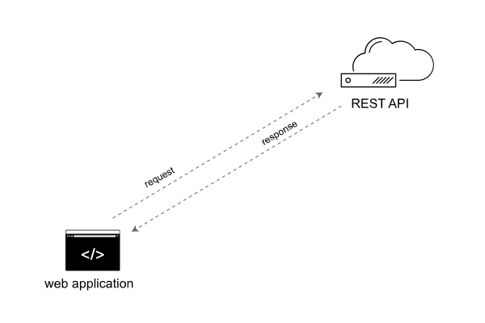API doc course
Outline
- The market for REST API doc
- What is a REST API?
- A developer scenario with APIs
- API Reference topic elements
- Other sections in API doc
- Tool decisions
- Design patterns
I. The market for REST API doc
API doc is the product interface

Without doc, API features don't exist
For an API, it’s all about the documentation. If an API feature is missing from the documentation, it might as well not exist. — Ruben Vermeesch
REST API growth is exponential

The web is a services mashup
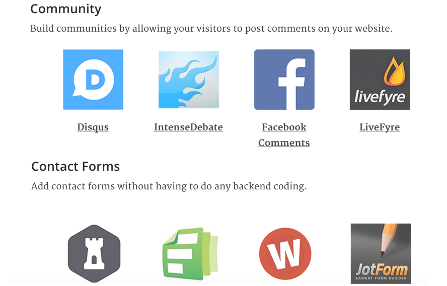APIs power Internet of Things
APIs are the inter-connector which provide the interface between the Internet and the Things. JavaWorld’s Andrew Oliver calls APIs “the glue and interesting part where the Internet of Things starts to become useful and more than a buzzword.” APIs expose the data that enables multiple devices to be combined and connected to solve new and interesting workflows. — Nordic APIs
II. What is a REST API?
APIs allow systems to interact

APIs provide the data wiring
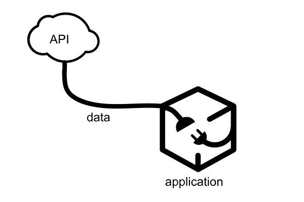It's all about requests and responses
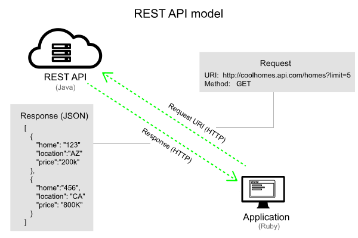The web itself follows REST
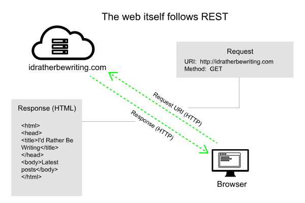III. A developer scenario with APIs
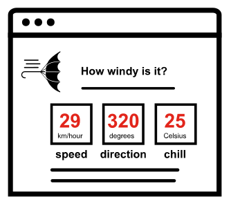Aeris Weather API

Get authorization keys
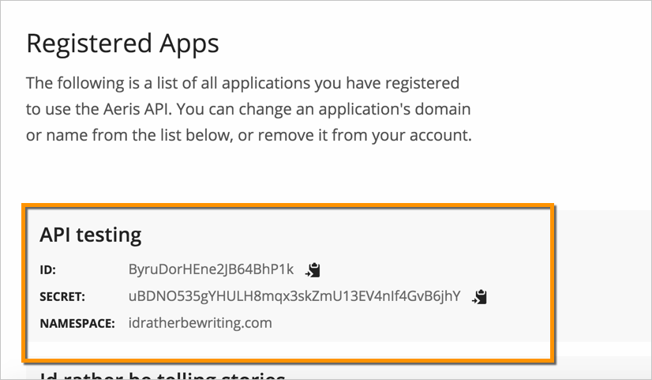Submit requests with cURL
Request
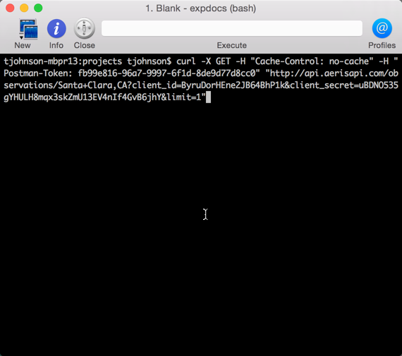Response
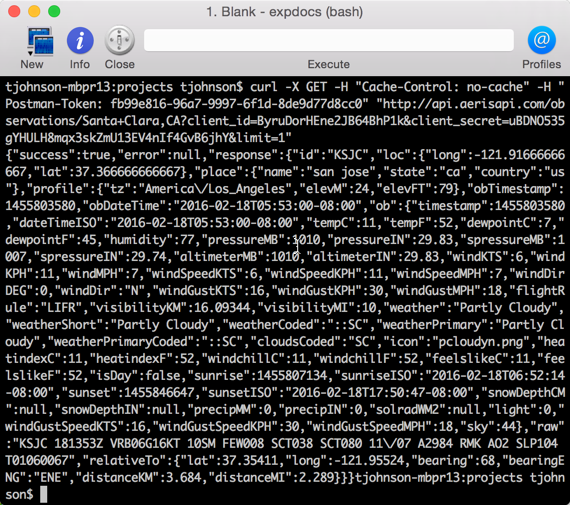Submit requests with Postman
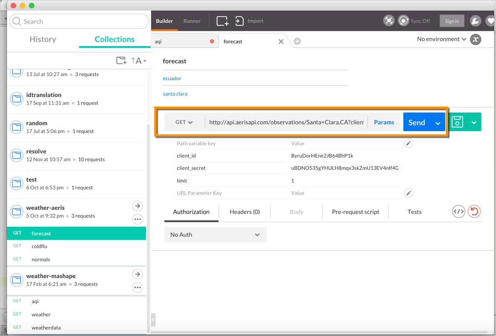Convert to other formats
Code samples button
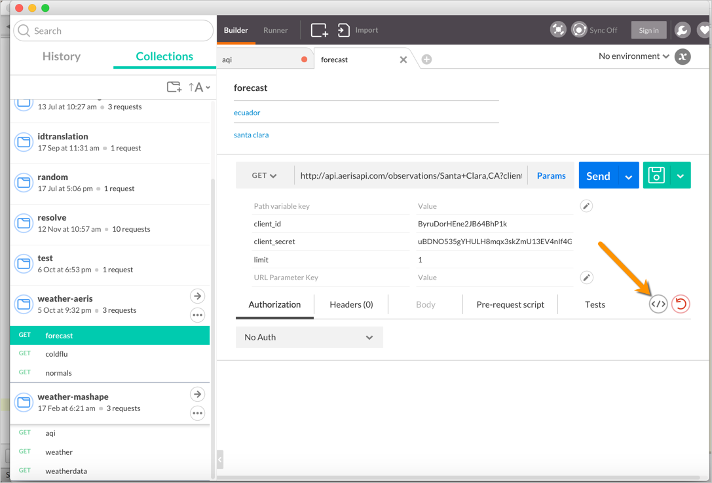Copy the code
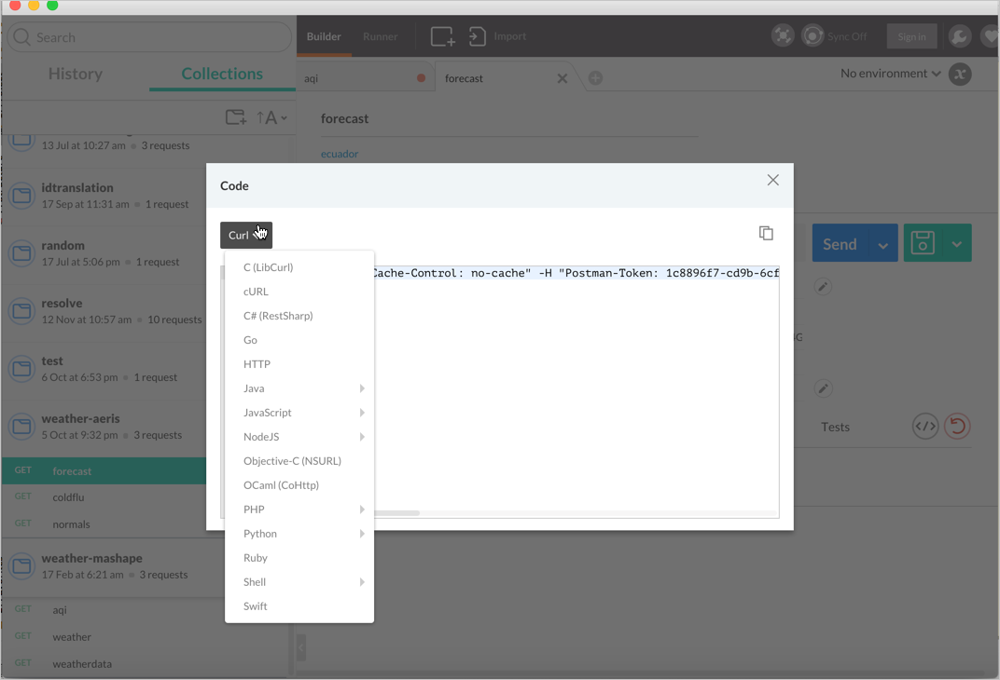Analyze the JSON response
{
"success": true,
"error": null,
"response": {
"id": "KSJC",
"loc": {
"long": -121.91666666667,
"lat": 37.366666666667
},
"place": {
"name": "san jose",
"state": "ca",
"country": "us"
},
"profile": {
"tz": "America/Los_Angeles",
"elevM": 24,
"elevFT": 79
},
"obTimestamp": 1455774780,
"obDateTime": "2016-02-17T21:53:00-08:00",
"ob": {
"timestamp": 1455774780,
"dateTimeISO": "2016-02-17T21:53:00-08:00",
"tempC": 11,
"tempF": 52,
"dewpointC": 8,
"dewpointF": 46,
"humidity": 82,
"pressureMB": 1005,
"pressureIN": 29.68,
"spressureMB": 1002,
"spressureIN": 29.59,
"altimeterMB": 1005,
"altimeterIN": 29.68,
"windKTS": 9,
"windKPH": 17,
"windMPH": 10,
"windSpeedKTS": 9,
"windSpeedKPH": 17,
"windSpeedMPH": 10,
"windDirDEG": 80,
"windDir": "E",
"windGustKTS": null,
"windGustKPH": null,
"windGustMPH": null,
"flightRule": "LIFR",
"visibilityKM": 16.09344,
"visibilityMI": 10,
"weather": "Cloudy with Light Rain",
"weatherShort": "Light Rain",
"weatherCoded": ":L:R,::OV",
"weatherPrimary": "Light Rain",
"weatherPrimaryCoded": ":L:R",
"cloudsCoded": "OV",
"icon": "rainn.png",
"heatindexC": 11,
"heatindexF": 52,
"windchillC": 11,
"windchillF": 52,
"feelslikeC": 11,
"feelslikeF": 52,
"isDay": false,
"sunrise": 1455720807,
"sunriseISO": "2016-02-17T06:53:27-08:00",
"sunset": 1455760184,
"sunsetISO": "2016-02-17T17:49:44-08:00",
"snowDepthCM": null,
"snowDepthIN": null,
"precipMM": 0.001,
"precipIN": 0.001,
"solradWM2": null,
"light": 0,
"tempMax6hrC": 18.3,
"tempMax6hrF": 65,
"tempMin6hrC": 10.6,
"tempMin6hrF": 51,
"sky": 100
},
"raw": "KSJC 180553Z 08009KT 10SM -RA FEW013 SCT036 OVC070 11/08 A2968 RMK AO2 RAB0455E12B45 SLP049 P0000 60013 T01110083 10183 20106 51044",
"relativeTo": {
"lat": 37.35411,
"long": -121.95524,
"bearing": 68,
"bearingENG": "ENE",
"distanceKM": 3.684,
"distanceMI": 2.289
}
}
}
Sample API integration
Wind conditions for Santa Clara
Wind chill:
Wind speed:
Wind direction:
IV. API Reference topic elements
- Resource description
- Endpoint
- Methods
- Parameters
- Request submission example
- Request response example
- Code samples
1. Resource description
Terminology for "resource" varies
- API calls
- Endpoints
- API methods
- Calls
- Resources
- Objects
- Services
- Requests
A single resource can have multiple endpoints
api_site.com/{apikey}/users
// gets all users
api_site.com/{apikey}/users/{userId}
// gets a specific user
api_site.com/{apikey}/rewards
// gets all rewards
api_site.com/{apikey}/rewards/{rewardId}
// gets a specific reward
api_site.com/{apikey}/users/{userId}/rewards
// gets all rewards for a specific user
api_site.com/{apikey}/users/{userId}/rewards/{rewardId}
// gets a specific reward for a specific user
api_site.com/{apikey}/users/{userId}/rewards/{missionId}
// gets the rewards for a specfic mission related to a specific user
api_site.com/{apikey}/missions/{missionid}/rewards
// gets the rewards available for a specific mission
2. Endpoint definition
Terminology for "endpoint" varies
- Requests
- Endpoints
- API methods
- Resource URLs
- URLs
- URL syntax
3. Method
- POST
- PUT
- GET
- DELETE
- PATCH
4. Parameters
Parameters configure the endpoint

Three types of parameters
- header parameters
- query parameters
- body parameters
Parameter order is irrelevant
/surfreport/{beachId}?days=3&units=metric&time=1400
/surfreport/{beachId}?time=1400&units=metric&days=3
Data types for params
- string
- integer
- boolean
- object
Put parameters in curly braces
/campaigns/{campaign_id}/actions/send
Request body parameters are usually JSON
{
"days": 2,
"units": "imperial",
"time": 1433524597
}
5. Sample request
Requests clarify syntax

API Explorers provide interactivity with your own data

6. Sample response
A sample of a sample response

Strategies for nested objects

Where to include sample responses

7. Code samples

See also Twilio
Putting it all together

V. Other sections in API doc
- Overview
- Getting started
- Authorization keys
- Rate limits
- Code samples/tutorials
- Status and error codes
- Quick reference
1. Overview

2. Getting started

3. Authorization keys
API keys

Basic Auth
Authorization: Basic bG9sOnNlY3VyZQ==
HMAC
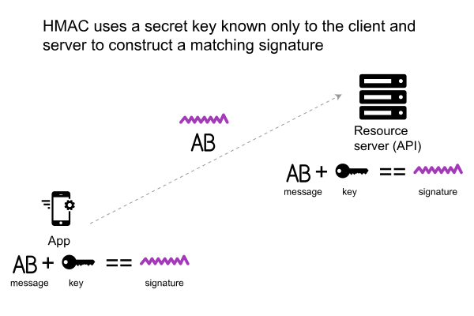OAuth 2.0
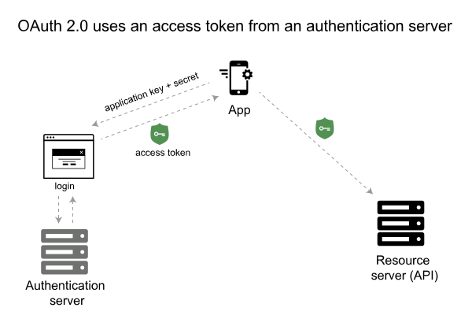4. Rate limits

5. Status and error codes

6. Code tutorials
Target languages

Focus on the why, not the what
Use syntax highlighting, white spacing
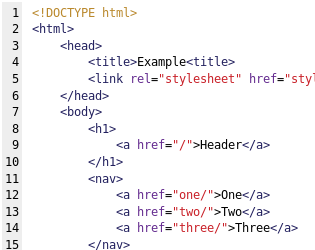7. Quick reference guide

See also the Shopify cheat sheet.
VI. Tool decisions
- Who will write? Engineers or tech writers?
- Pros of having engineers write...
- Cons of having engineers write...
Riona McNamara turnaround story
Why devs don't use HATs
- No integration into version control
- No auto-generation of doc from source
- No reference templating engines
- No interactive API consoles
- No sexy outputs that sell
Using a version control system
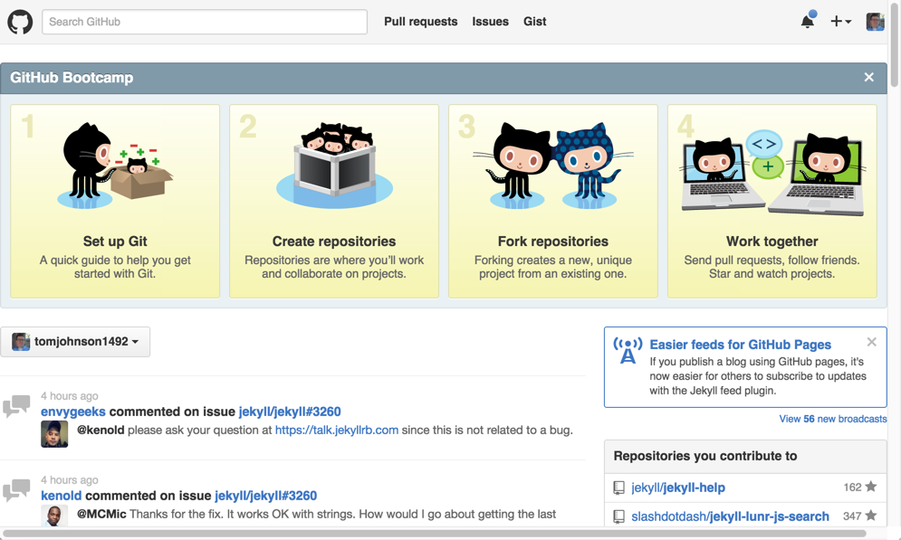Pull request workflows

REST API specification formats
- Swagger
- RAML
- API Blueprint
The philosophy of the spec
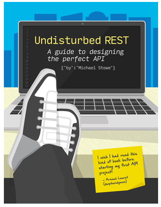Generate client SDKs from spec
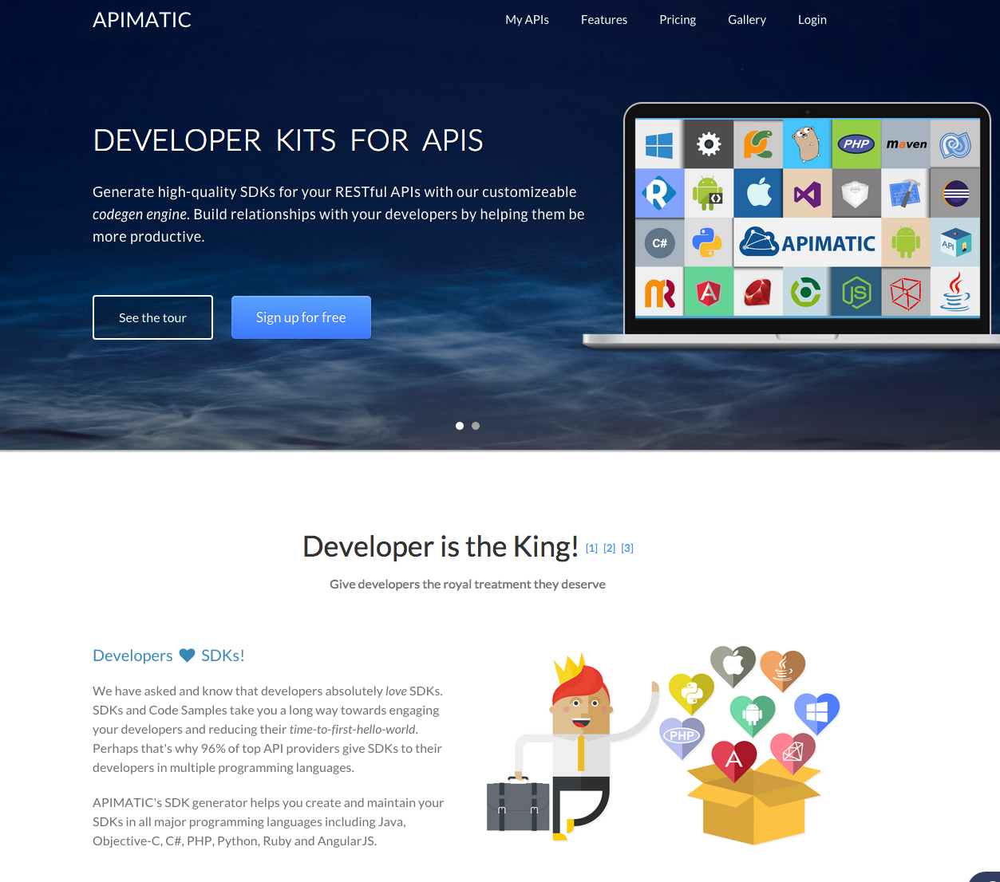VII. Design patterns
- Structure and templates
- Website platform
- Abundant code samples
- Long-ish pages
- API Interactivity
Structure and templates

Website platform

Abundant code samples

Long-ish pages

API Interactivity

Challenging factors
- Translation
- Content re-use
- Versioning
- Authentication
Thanks!

Tom Johnson
— idratherbewriting.com
— @tomjohnson
— tomjoht@gmail.com